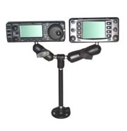
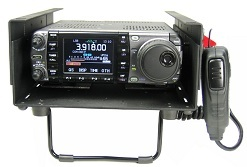

Last Modified: February 18, 2013
Contents: Basics; Mounting Option; Avoidances; Odd & Ends;
 Today's vehicles don't have a lot of room to mount amateur transceivers of any size, and some are so cramped for space, you have to use extraordinary means to mount just the remote head safely. As I point out in my Safety and Installation articles, there are a few things to avoid. One of those is the top of the dash. While inviting, and maybe even handy, there is a very good reason why, as shown in the right photo (click to open full size). Note the piece of padded dash literally ripped away by the force of the deploying air bag. If a remote head had been mounted within the air bag's reach, it too would have been tossed asunder. Remember, when they deploy (explode actually), they accelerate at speeds up to 200 mph! Anything is their way, or attached to them, will be propelled asunder, and perhaps directly at you! It is safety hazard which can't be ignored, as this movie clearly shows.
Today's vehicles don't have a lot of room to mount amateur transceivers of any size, and some are so cramped for space, you have to use extraordinary means to mount just the remote head safely. As I point out in my Safety and Installation articles, there are a few things to avoid. One of those is the top of the dash. While inviting, and maybe even handy, there is a very good reason why, as shown in the right photo (click to open full size). Note the piece of padded dash literally ripped away by the force of the deploying air bag. If a remote head had been mounted within the air bag's reach, it too would have been tossed asunder. Remember, when they deploy (explode actually), they accelerate at speeds up to 200 mph! Anything is their way, or attached to them, will be propelled asunder, and perhaps directly at you! It is safety hazard which can't be ignored, as this movie clearly shows.
So, whatever you do, whatever radio you use, regardless of any remote head it may or may not have, it should be mounted away from all safety devices (SRS), and not be in a position to interfere with any of the vehicle controls, no matter how minor they may be. The best mounting locations are below the center line of the dash, and towards the driver's side to avoid the passenger side airbag. These points cannot be over emphasized!
The Photo Gallery depict how others have installed their radios and heads, and have avoided most of the pitfalls.
 Some mobile operators disregard the aforementioned, and continue to mount their transceivers within reach of the passenger side airbag. Their reasoning is often based on the fact that some airbags deploy from the center of the dash, rather than the top of the dash. They ignore the fact that airbags must meet fed guidelines with respect to coverage area. Don't be fooled! Any hardware mounted atop the dash to the right of the steering wheel, is within reach of the passenger airbag!
Some mobile operators disregard the aforementioned, and continue to mount their transceivers within reach of the passenger side airbag. Their reasoning is often based on the fact that some airbags deploy from the center of the dash, rather than the top of the dash. They ignore the fact that airbags must meet fed guidelines with respect to coverage area. Don't be fooled! Any hardware mounted atop the dash to the right of the steering wheel, is within reach of the passenger airbag!
With the aforementioned in mind, you have a few options. But first, you have to decide how you're going to get the job done. Are you going to use a commercial mount, or perhaps a home brewed one? Let's cover a few points here before we go on.
When I speak of mounts, I'm not talking about the ones shipped with your new transceiver. No matter who made the radio, the supplied (usually at extra cost) mounting brackets are rather brief. They're certainly not universal, but just a basic bracket which can be used to mount the remote head (if there is one), and/or the main body. As long as the mounting surface is flat, and you have lots of available space, they'll do just fine. We all know this is not the norm.

There are a few companies who specialize in mobile mounts. Ram Mounts is one of them, and they have a very good selection aimed at us amateur radio operators. Their web sites offers a plethora of examples. The photo at left is just one of many.
 Doug Johnson, W9IIX, has two different lines of mobile mounts, and enough accessories to go with them to mount just about any amateur transceiver. His e-mail address and telephone number are listed on his web site.
Doug Johnson, W9IIX, has two different lines of mobile mounts, and enough accessories to go with them to mount just about any amateur transceiver. His e-mail address and telephone number are listed on his web site.
Gamber-Johnson, is most likely the largest manufacturer of mobile mounts in the world. Just about every police, fire, governmental, or allied safety organization uses them exclusively. While Ram Mounts' products (and most others) are universal, Gamber-Johnson's are designed for specific vehicles. Next time you see a parked police vehicle, look inside. The chances are you'll see a G-J mount.
Gamber-Johnson also make a first-rate, lockable slide mount replete with a coaxial QD good for up to 512 MHz. Cheap CB slide in mounts aren't much good above 50 MHz, and I don't know of any that are lockable.
In addition, Panavise, Havis, and Jotto Desk all make customized radio mounts for just about every vehicle you can name. Standard model prices vary from as little as $20, to as much as $200. Large custom mounts can run into the thousands.
If you don't drive off-road, a gooseneck mount might be in order. Several companies make them, and they attach via a seat mounting bolt. Checkout Panavise.
There is another aspect of mobile mounts every user should be aware of, and that is the attachment methodologies used. While I'll agree there are some spring clamp mounts, and some rare-earth magnet mounts that are very secure, the really safe method is to use a bolt! This applies to the actual mount, and to the device being held by the mount.

The modules themselves are expandable, with literally hundreds of mounting hole combinations. It is a niche product perhaps, but they're well made for whatever purpose you put them to.
Commercial mounts are not inexpensive. If low cost is an objective, the the next section is for you.
There are a few things I think amateurs should stay away from when installing radios, and remote heads. These include double-sided sticky tape (or any type of tape), loop and hook (Velcro®) fastening material, magnets (believe it or not), or any kind of spring, bungie cord, rubber band, or wedged in blocks of wood. Think about this.
 "If Velcro is so good, why don't automobile manufacturers use it? I think this mounting technique shows the loyalty of a car's owner, actually. It demonstrates a level of dedication towards the preservation of their cars to such an extent that they would rather risk injury or death, rather than drill any holes. My hat is off to them." Mark K5LXP, Albuquerque, NM.
"If Velcro is so good, why don't automobile manufacturers use it? I think this mounting technique shows the loyalty of a car's owner, actually. It demonstrates a level of dedication towards the preservation of their cars to such an extent that they would rather risk injury or death, rather than drill any holes. My hat is off to them." Mark K5LXP, Albuquerque, NM.
I should mention that some things we use, can be safely attached with Velcro®. A microphone hanger comes to mind. Just remember, if you want it to stay put during a crash, it shouldn't weigh more than a couple of ounces. Even then, the more square inches of material, the better.
Some forms of the double-sided tapes are used by vehicle manufacturers to attach all matter of things together. However, the tape they use is made from industrial grade adhesives. Once they're stuck on, they stay stuck! If you know how much of your vehicle was put together using this stuff, you might be surprised. They even use "pin-cushion" fasteners to hold down trim pieces inside of vehicles. If you've ever looked inside a crashed vehicle, you'd know all of trim typically flies off. One could argue that it is designed to do that, but a four ounce piece of trim is one thing, and three pound remote head is another! The safest method is always one that uses screws, nuts, and bolts. If you need to have a removable radio, then invest in a slide mount.
Clearly, some mounting methods are far-less effective and secure than others. The essential element in any method you choose, is safety. If it is easy for you to remove (Velcro® for example), then a crash will remove it, no matter how secure you assume it is. For example, I was recent shown a very clean install of an IC-7000 in a Volvo S40. The head mount was properly attached by using existing screws in the lower dash. The problem was, the remote head was held onto the mount with a magnet, albeit one of those insanely powerful neodymium ones. The proud owner demonstrated how secure the head was by trying to pull it off. Well, all I did was slide the head sideways about and inch, and off it came! This just proves that some things look and sound good in theory, but are poor in practice. It pays to think safety!
I've seen cup holders used a lot, but most of the time only friction holds them in place. A much better alternative is to remove the rubber insulator at the bottom of the cup holder, and screw down the mount. When trade-in times comes, just remove the mount, replace the insulator, and no visible holes!
 The propensity of some amateurs to mount additional cooling fans blowing on their transceiver's heat sink, shows a lack of understanding about thermal dynamics. While it might make the owner warm, and fuzzy (pun intended), it is an inane practice. All transceiver manufacturers publish operating temperature guide lines for their various models. If you're exceeding the published limits, adding additional cooling isn't going to help much. Remember too, it is always best to mount transceivers where they can get an adequate flow of air all around the chassis. Part of this strategy is to mount the transceiver using the supplied mounting bracket, rather than flat against any surface especially carpeting!
The propensity of some amateurs to mount additional cooling fans blowing on their transceiver's heat sink, shows a lack of understanding about thermal dynamics. While it might make the owner warm, and fuzzy (pun intended), it is an inane practice. All transceiver manufacturers publish operating temperature guide lines for their various models. If you're exceeding the published limits, adding additional cooling isn't going to help much. Remember too, it is always best to mount transceivers where they can get an adequate flow of air all around the chassis. Part of this strategy is to mount the transceiver using the supplied mounting bracket, rather than flat against any surface especially carpeting!
Don't use car polish on anything with RF around it. The majority of car polishes are conductive which speaks volumes. Further, the stuff can seal in moisture just as good as it seals it out. Every single ballmount I have had fail, did so because it had car polish on it. If you have to protect your antenna and/or mount from the ravages of weather, use RainX. Just remember, it too can discolor some plastics, so exercise care.
Don't forget grommets. If a wire goes through a hole, it should do so through a grommet. Sometimes, in the case of firewall penetration, this allows fumes and moisture to get into the cabin. I've seen just about everything used to seal grommets including RTV, plumbers putty, and coax seal. Everyone of these has some drawback. The best stuff I've seen is made by 3M (Lord, what isn't?). It is called Strip-Caulk®, but most folks call it Dum Dum. You can buy it at most auto parts stores. Although it is gooey, it can be removed even years later. What little residue it has is easily removed with denatured alcohol.
{kind=link}